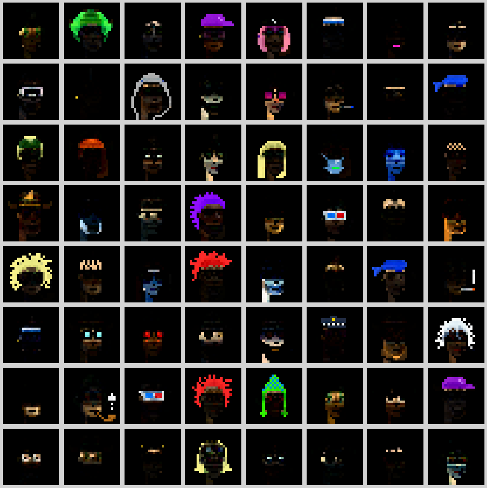

notes
Yawar Mahmood
I'm an AI engineer and data scientist, with a master's degree in industrial mathematics and statistics from NTNU. Most of my work is on machine learning systems that are used in practice, for example computer vision in grocery stores and agents that read documents.
This is where I write about projects from work and my spare time. Most notes have small demos you can try.
AI/ML
computer vision and agentsHow does a checkout recognise 10,000 products?
A self-checkout system that recognises products from camera images, now running in ten grocery stores. The products are recognised with a similarity search over a database of embeddings.
Can a phone camera fit your bike?
At APIIR we made an app that gives a bike fit from a phone video, using pose estimation and a biomechanical model. It got more than 20,000 users.
Can an AI agent read door paperwork?
High-security door projects come with a lot of documentation. I built a LangGraph agent that takes instructions in plain language and does the reading.
What happens when four AI agents work as a team?
I gave four Claude agents separate roles and a shared folder, and let them build two small games together while a script passed messages between them.

What are 500 pixel faces made of?
Non-negative matrix factorisation of 500 small pixel faces, used for compression and denoising. The building blocks it finds are parts like hair, glasses and beards.
How does a regression tree split the data?
Click to add points. Drag the depth slider and watch the tree carve the data into boxes, one split at a time.
Mathematics
statistics and optimisationWhere do the students go in summer?
A Bayesian model of 1.7 million bus boardings on Line 3 in Trondheim. Most of the seasonal variation comes from the university calendar, while the weather has little effect.
Clustered, random or evenly spread?
Three sets of dots that look almost the same but come from three different spatial processes.
When does it rain in Tokyo?
39 years of daily rain data from Tokyo, used to compare MCMC, INLA and plain optimisation for the same Bayesian model.
Can concrete be both cheap and green?
A small genetic algorithm searches for concrete recipes that are both cheap and low in CO₂. You can't have both, so it finds the trade-off curve.
Physics & simulation
mechanics and Monte Carlo
When does a ship capsize?
A ship with a half-circle hull, loose cargo and waves, modelled with ODEs and solved with three different numerical methods.

How do molecules form droplets without a membrane?
A Monte Carlo simulation of charged molecules that form clusters on their own, and how a higher temperature breaks the clusters up.
How does a tensegrity structure find its shape?
Tensegrity structures are held up by cables alone. We found their shape by minimising the energy with BFGS.